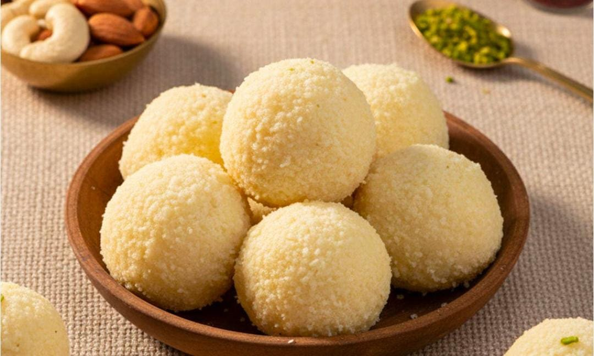
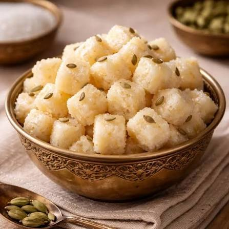
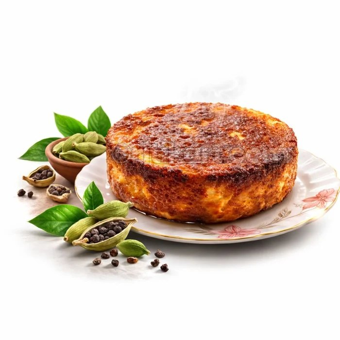

A sweet inside a sweet
Kheer Kadam is a round, festive sweet with a surprise inside. At its heart is a soft, saffron-scented rasgulla; around it is a smooth layer of sweetened mawa (khoya); and the outside is rolled in roasted, grated chhena, which gives the golden crumb you can see in the photograph.
It is made specially for festivals and celebrations. Each bite has three textures — the crumbly roasted coating, the rich melt of the khoya and the juicy rasgulla at the centre.
Because it contains fresh milk products it is best eaten chilled and within three to four days. Like many chhena and khoya sweets of eastern India, it shows how the region turns simple milk into an endless variety of mithai.

Tap a photo to see it bigger.

